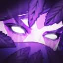

Templar Assassin
Abilities:
| Refraction |
Meld |
Psi Blades |
Psionic Trap |
 |
 |
|
|
Lore:
Lanaya, the Templar Assassin, came to her calling by a path of curious inquiry. Possessed of a scientific bent,
she spent her early years engaged in meticulous study of nature's laws--peering into grimoires of magic and
alchemy, recreating experiments from charred fragments of the Violet Archives, and memorizing observations of
the Keen recordkeepers. Already quiet and secretive by nature, the difficulty of acquiring these objects further
reinforced her skills of stealth.